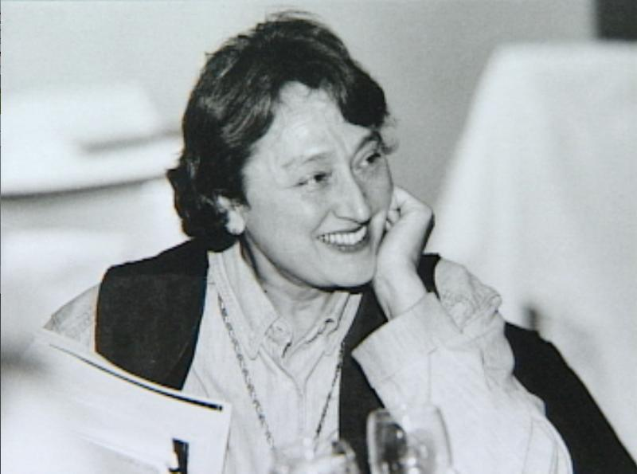
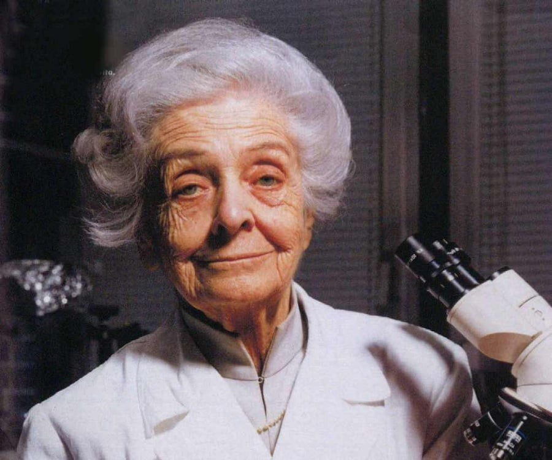
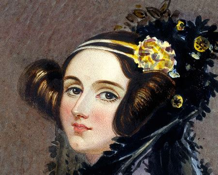

Mujeres científicas en la historia
Inicio
Menu 2
Menu 3

Lynn Margulis
Margarita Salas
Jane Goodall

Rita Levi-Montalcini
Hipatia de Alejandría

Ada Lovelace
Enlaces de interés
Otras mujeres Científicas
20 Mujeres cientificas más importantes de la historia
Científicas Históricas que cambiaron el mundo
Mujer y Ciencia
Mujeres y Ciencia, un mundo cada vez más femenino
La mujer en la ciencia española con datos y gráficas
Dia internacional de la mujer y la niña en la Ciencia por la Unesco